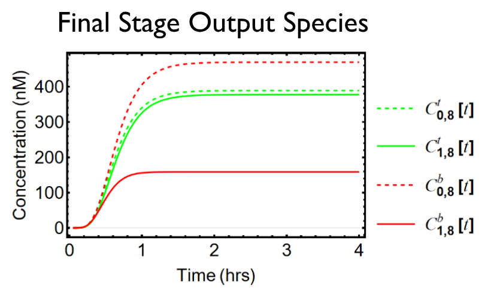
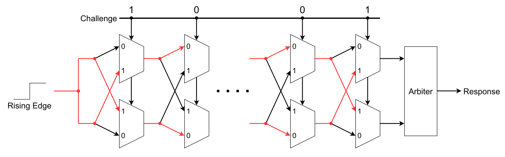
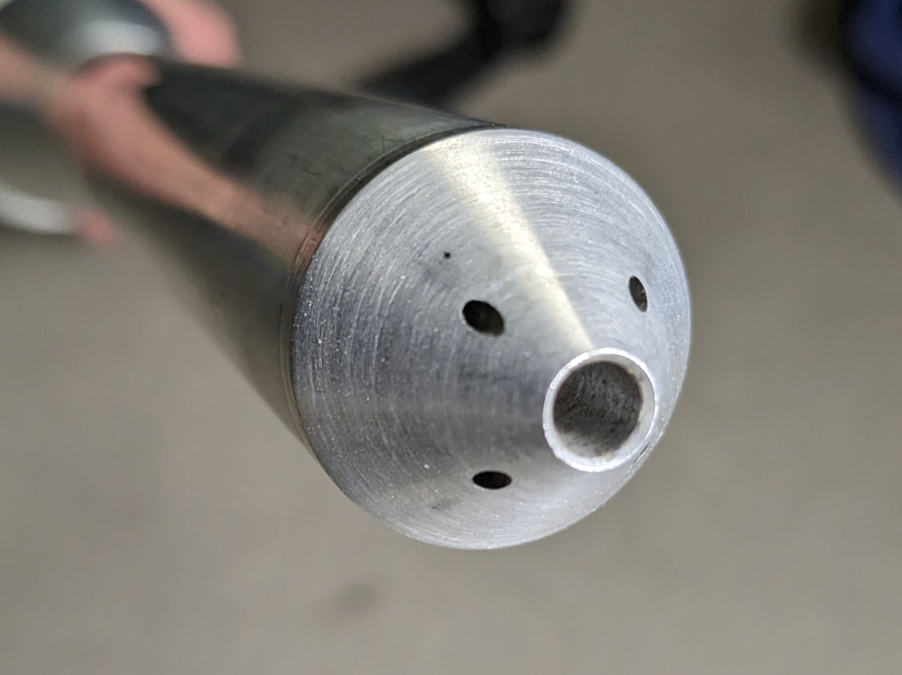
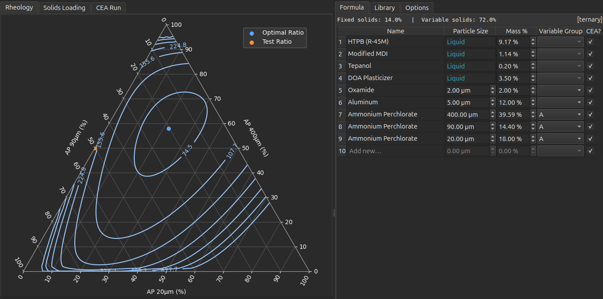
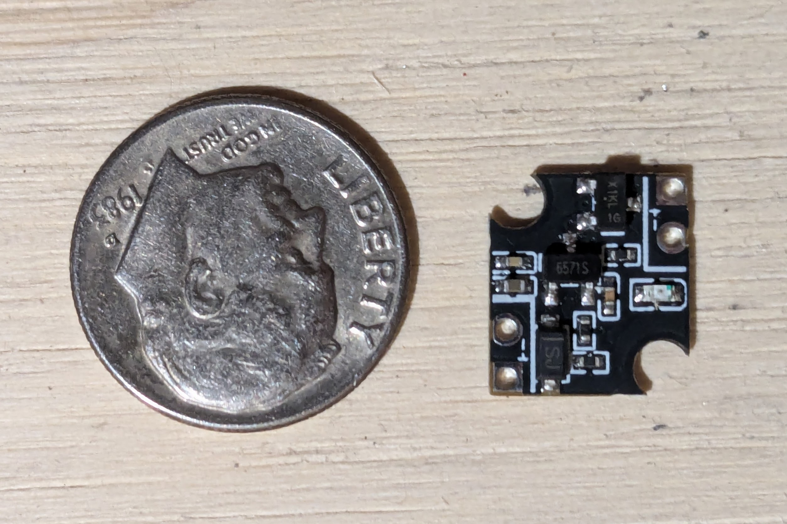

Silicon Design Engineer II · AMD
Full-time on-site silicon design engineering role focused on RTL-driven development for production hardware programs.
DFT RTL · AMD · Fort Collins, CO
I currently work as an RTL engineer at AMD, focused on DFT for next-generation x86-64 CPU cache. My background includes IEEE-published hardware security research, avionics leadership on the University of Minnesota Rocket Team, and ongoing development of open-source ballistics simulation tools for hobby rocketry.
Full-time on-site silicon design engineering role focused on RTL-driven development for production hardware programs.
Worked on load/store unit RTL for a next-generation high-performance x86 CPU core. Designed SystemVerilog RTL and performed verification using Synopsys Verdi, and used formal equivalence flows to validate RTL changes supporting downstream power and timing objectives.
Developed JTAG drivers for ASIC bring-up DFT functions including MBIST, ALLSCAN, and clock observation. Also wrote C firmware on FreeRTOS for Slingshot network devices and built Python regression tooling to track HPC system performance and detect faults over time.
Conducted UROP-funded hardware security research under Professor Keshab Parhi, resulting in an IEEE MWSCAS 2023 publication. See Publications below.
Led a 15-person avionics team with an annual budget of about $3,300, driving integration of active controls and state-estimation features into a reusable flight computer platform. Oversaw radar and custom GPS receiver development for apogee determination and wrote technical documentation for competition reporting. Team outcomes included winning IREC in 2021 and winning the 30K Student Research and Developed Motor category at IREC in 2023 and 2024.
Physical unclonable functions (PUFs) are small circuits used as hardware security primitives for authentication, generating unique signatures from inherent manufacturing variation. This paper analyzes a novel stochastic molecular multiplexer PUF for authentication in biosecurity applications where PUFs are implemented using bio-substrate rather than electronic means. UROP-funded research conducted under Professor Keshab Parhi at the University of Minnesota.
View on IEEE Xplore (DOI)
Symposium poster covering the stochastic molecular MUX PUF research, delivered at the University of Minnesota Undergraduate Research Opportunities Program symposium.
View Poster
Developed hybrid hyperdimensional computing and deep learning models for multivariate anomaly detection, improving accuracy by 1.11% and sensitivity by 4.88% over prior state-of-the-art methods.
Led a five-person senior design team (Spring 2023) across hardware and software. We designed the on-board PCB and FPGA pipeline, built software to write optimization problems into the FPGA, and implemented parallel programming of COBI (CMOS Oscillator-Based Ising Computer) chips with scan-out of solutions to increase throughput and overall parallelism. Increased solution throughput by 71240x and decreased power consumption per solution by 99.9928% per solutin versus previous approach.

Collaborated with another student to build and calibrate a 5-hole pitot-static probe for IREC 2023 with a focus on deep-learning calibration. I tuned models that mapped raw pressure sensor outputs to Mach number, angle of attack, and sideslip using wind-tunnel data, including leave-one-out cross-validation, covariance-based data augmentation, regularization, and hyperparameter tuning. Final model performance reached about 0.035 RMSD for Mach and 1.11/0.957 degrees RMSD for angle of attack/sideslip.
Abstract
Developed a cache replacement policy variant in ChampSim for Advanced Computer Architecture (Fall 2023) that used a binary-search hierarchy to classify re-reference intervals faster and reduce miss-handling latency. The approach delivered up to 8% IPC uplift with lower hardware overhead versus baseline RRIP-style policies.
Developed openPEP, an open-source Python project for hobby rocketry propellant formulation. It optimizes the rheology of multimodal particle suspensions, integrates NASA CEA-based thermochemical analysis, and includes binder liquid-mix calculation tooling.
View on GitHub
A 12×12mm magnetic switch designed for high power rocketry. Toggle on/off with a neodymium magnet; includes reverse polarity protection, onboard status LED, and 1–4s LiPo compatibility. Designed for full JLCPCB PCB assembly.
View on GitHub
Open source contributor to openMotor, an internal ballistics simulator for solid rocket motor experimenters. Key contributions include internal mach number calculation to predict failures and minor improvements to plotting and UX.